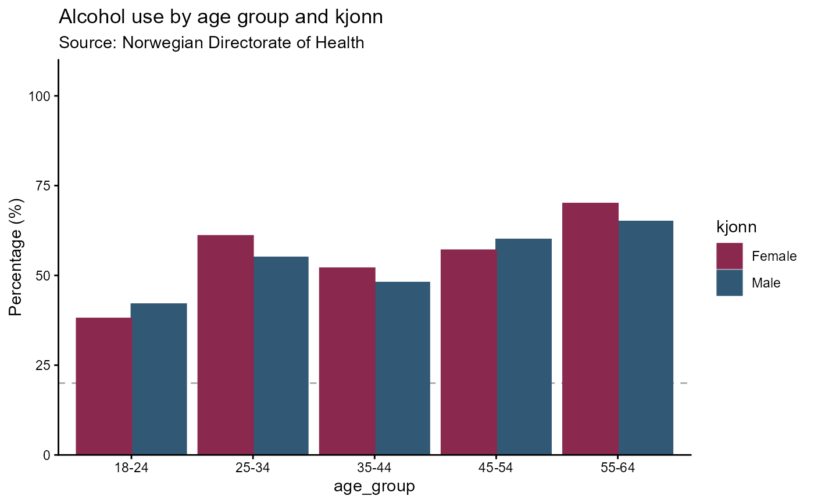
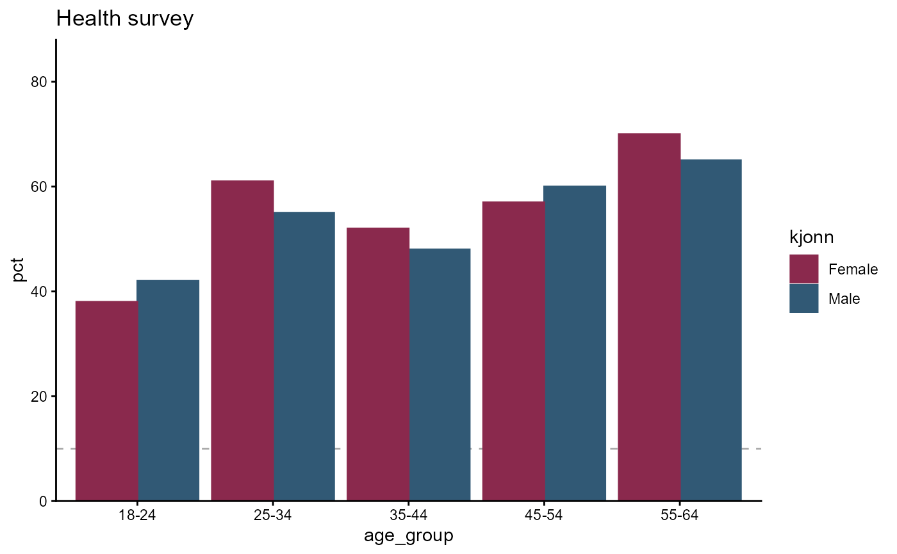

hd_geom_column() creates a column geometry layer that is added to an hd()
object via +. The layer records the geometry type and any geometry-specific
arguments; rendering only happens when the hd object is printed.
Arguments
- ...
Geometry-specific arguments forwarded to
hd_make().
Examples
survey <- data.frame(
age_group = rep(c("18-24", "25-34", "35-44", "45-54", "55-64"), each = 2),
kjonn = rep(c("Male", "Female"), times = 5),
pct = c(42, 38, 55, 61, 48, 52, 60, 57, 65, 70),
n = c(120, 115, 200, 210, 180, 175, 160, 155, 140, 145)
)
spec_col <- hd_spec(survey,
x = "age_group",
y = "pct",
group = "kjonn",
n = "n")
opts_col <- hd_opts(
title = "Alcohol use by age group and kjonn",
subtitle = "Source: Norwegian Directorate of Health",
ylim = c(0, 100),
yint = 20,
ylab = "Percentage (%)"
)
# Interactive (default)
hd_make(spec_col, "column", opts_col)
# Static ggplot2
hd_make(spec_col, "column", opts_col, backend = "ggplot2")

# Composable style
p <- hd(survey, x = "age_group", y = "pct", group = "kjonn")
p2 <- p + hd_geom_column()
# More options
p2 + hd_opts(title = "Health survey", ylim = c(0, 100))
# Pass an existing hd_spec
spec <- hd_spec(survey, x = "age_group", y = "pct", group = "kjonn", n = "n")
hd(spec, backend = "ggplot2") +
hd_geom_column() +
hd_opts(title = "Health survey", ylim = c(0, 80))
